| Volume 1, Issue 1, Year 2014 - Pages 52-58 | View PDF (Full-text) |
| DOI: 10.11159/ijtan.2012.008 | Linked References |
| ISSN: 1929-1248 | |
Representation of Heterogeneity in "Single Collector Efficiency" Equation for Multi Walled Carbon Nanotubes
Sara M. Mehrabi, William Milne-Home
University of Technology, Sydney, 5 Broadway, Sydney, NSW 2007, Australia
sara.moghadasmehrabi@student.uts.edu.au; william.milne-home@uts.edu.au
Abstract- Carbon nanotubes (type of engineered nanoparticles) are identified as a group of new and emerging contaminants. Because of their unique characteristics, novel models need to be developed in order to forecast their transport and fate in the saturated porous media. The movement of nanoparticles through saturated porous media has been previously modelled by clean-bed filtration theory. In this theory single collector efficiency (SCE) evaluates the fraction of transported particles that come into contact with the collector grain and can be removed from the aqueous phase. This equation assumes spherical geometry for nanoparticles. This assumption was identified as a short coming concerning carbon nanotubes (CNTs). To address this limitation, single collector efficiency equation was modified to accommodate the cylindrical shape of Multi-Walled Carbon Nanotubes (MWCNT), however, the underlying assumption for this empirical model is uniformity and homogeneity of the porous media. In this paper, further modification of the above-mentioned equation is suggested in order to represent the heterogeneity of a natural porous media through replacing the "collector diameter". This was achieved through utilising field measured properties such as hydraulic conductivity, porosity, and grain-size distribution. The resulting equation overcomes the limitations of current approaches and shows remarkable agreement with exact theoretical predictions of the single collector efficiency over a range of conditions commonly encountered in natural groundwater systems. Furthermore, the theoretical effect of natural heterogeneity on the movement of CNTs in saturated porous media is assessed. It was established that the use of an average grain size can greatly over-estimate the movement of CNTs while representing heterogeneity through the modified equation reduces the modelled mobility of CNTs. In addition, increasing heterogeneity (smaller uniformity coefficient) resulted in mobility reduction for CNTs.
Keywords: Groundwater contamination, Heterogeneity, Carbon nanotube, Filtration theory, Single collector efficiency, Groundwater modelling, Exposure assessment, CNT
© Copyright 2012 Authors - This is an Open Access article published under the Creative Commons Attribution License terms. Unrestricted use, distribution, and reproduction in any medium are permitted, provided the original work is properly cited.
1. Introduction
Rapid developments in nanotechnology and ever-increasing volumes of engineered nanomaterials, together with largely neglected risk-based studies regarding the potential harm done by these particles have become a concern for communities (Maynard et al., 2006). Production of these particles has led to their release in the urban and subsequently the natural environment (Nowack and Bucheli, 2007).
Very few studies have explored the movement of engineered nanoparticles in natural aquatic environments including -but not limited to- saturated soil (Li et al., 2008). However, based on information for other processes, it is likely that the behaviour of these materials will be different from non-particulate contaminants and hence new models and paradigms need to be developed for engineered nanoparticles in the saturated soil environment (Boxall, 2012).
Studies have explored the uptake and effects of some nanomaterials on a range of species (Oberdorster, 2004; Lovern and Klaper, 2006; Oberdorster et al., 2006; Kashiwada, 2006). The environmental impacts of nanomaterials seem to be determined by a range of characteristics including dissolution potential, aggregation potential, particle surface properties, the characteristics of the exposure environment, the level, and the frequency of exposure (Dhawan et al., 2006, Rogers et al., 2007).
Carbon nanotubes (CNTs) are a group of engineered nanoparticles which has attracted significant attention in the past decade. Because of their unique and distinctive characteristics, various types of CNTs have been used in actuators, sensors, composites, paints, coatings, biological agents, electronics and other applications (Balasubramanian and Burghard, 2005).
These particles were shown to form stable dispersions in aquatic environments in the presence of natural organic matter (NOM) and travel for potentially long distances. This behaviour highlights the importance of predictive modelling in order to forecast the fate and transport of CNTs in the environment.
Empirical governing equations have been developed to explain and imitate break-through curves (BTCs) for CNTs. While these equations have been effectively used in laboratory-based studies (using well characterised and perfectly sorted porous media), they offer little value for real-world modelling of CNT transport through a heterogeneous natural porous media.
Single collector efficiency (SCE) is a key element in filtration theory as it represents the potential and consequence of contacts between the particles and the porous medium's single grains. This work is dedicated to developing a modified equation for single collector efficiency, in which heterogeneity of the porous medium is taken into account to model the transport of multi-walled carbon nanotubes (MWCNTs) in natural saturated porous media. Modification is pursued through replacing 'collector diameter' by a term inclusive of heterogeneity, using permeability measurements and grain size distribution.
The relationship between grain size and hydraulic characteristics is investigated and several methods of estimating hydraulic conductivity based on grain size, and grain size distribution are evaluated. Subsequently, the most suitable and versatile equation is selected based on the modelling criteria, theoretical value, data availability, and the purpose of the study. A modified equation is developed, and the results are compared with an empirical equation Liu et al. (2009) investigated based on laboratory experiments, to explain MWCNTs break through curves.
The resulting equation can be used for exposure assessment and transport modelling studies for CNTs as well as any other cylindrical nanoparticle through a natural heterogeneous saturated porous media.
2. Mobility and Toxicity of MWCNTs
Carbon nanotubes are highly hydrophobic and therefore have very low water solubility (Lam et al. 2004); however they can form stable dispersions in water in the presence of organic matter. Hyung et al. (2007) studied the stability of MWCNTs in the Suwannee River (Georgia USA) where these nanoparticles were in the form of dispersed individuals and remained stable for over a month. Their findings suggested that MWCNTs in the natural, aqueous environment might occur to an unexpected extent.
This study establishes the basis for considering a mechanism, previously neglected in environmental fate and transport of CNTs in surface water as well as groundwater bodies. For instance, in a typical sandstone shallow aquifer with a hydraulic conductivity between 30 to 300 mm per hour (approximately 0.7 to 7 meters per day) a single pulse of these nanoparticles will travel between 20 to 200 meters in the first month in the presence of organic matter. This value is swiftly increased in the case of a sandy, costal aquifer where hydraulic conductivity reaches 40 to 45 meters per day. Fractured systems provide another example where the distances travelled by dispersed CNTs can substantially increase over a short period of time.
The cytotoxicity of carbon nanotubes has been reviewed by Hussain et al. (2009) who observed that invariably, CNTs are toxic to cells when used as a suspension in cell culture media in any given experiment. In contrast, they appear as nontoxic to a matrix or to a culture dish if immobilized. The findings of Cui et al. (2005), Davoren et al. (2007), Ding et al. (2005), and Raja et al. (2007) are in agreement with those of Hussain et al (2009) on the adverse effects of CNTs on various human cells. A recent study by Poland et al. (2008) on mice suggested asbestos-like pathogenicity, however it is premature to conclude that nanotubes should be considered to have a toxicological profile similar to asbestos (Pulskamp et al., 2007, Kang et al., 2007) . In the future therefore, we need to bring the exposure and effects studies closer together in order to determine whether or not nanomaterials can pose a risk to humans and the environment (Tiede et al., 2008; SCENIHR, 2007).
2. 1. Modified MWCNT Single Collector Efficiency
Classic filtration theory, also known as clean-bed theory was primarily developed to evaluate the efficiency of man-made filtration systems. However in principle it could be -and indeed has been- used to simulate the movement of colloids (suspended particles) in saturated porous media.
This theory assumes spherical collector (grains of the porous media) and spherical particle geometries. Based on filtration theory Eq. (1), a fraction of transported particles which come into contact with a collector (grain) can be removed from the aqueous phase. The assumed three mechanisms through which a particle comes into contact with a collector are; inertial impaction, settling due to gravity and diffusion.
|
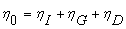 |
(1) |
where , , and 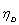 represent theoretical values for single collector efficiency (SCE) when the only transport mechanisms are interception, sedimentation, and diffusion respectively.
Particle shape was shown to have a major influence on filtration, hence this equation was modified to accommodate the cylindrical shape of CNTs (Yao, 1968 and Yao et al. 1971, Liu et al. 2009). In this equation, 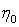 is calculated by Eq. (2) assuming all [significant] contacts are side contact.
|
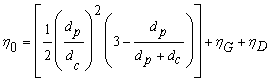 |
(2) |
where
|
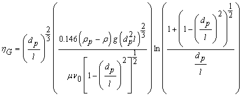 |
(2a) |
and
|
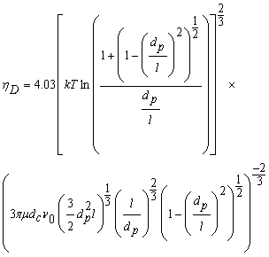 |
(2b) |
where dp and l are particle diameter and length respectively, dc is collector (grain) diameter, ρp is particle density, ρ is the fluid density, μ is the fluid viscosity, v0 is fluid velocity, T is the absolute temperature, and k is the Boltzmann constant.
3. Representation of Heterogeneity
While Eq. (2) was shown to provide improved results for CNT break through curves in homogeneous soil columns, it fails to represent the heterogeneity of a natural porous medium. Previous colloidal movement modelling studies suggest that colloid size, heterogeneity of the porous media and attachment efficiency are significant in colloid mobility (Sun et al., 2001, Bhattacharjee et al., 2002, Jaisi et al., 2008). Complex modelling of colloids has been done by a number of researchers (Maxwell et al., 2003 and 2007, Scheibe, 2007, Tufenkji et al. 2003) where the results showed much improvement following the utilization of field-measured hydraulic conductivity data and a better representation of field natural heterogeneities. These studies show the importance of representation of heterogeneity for modelling the transport of colloids and nanocolloids such as CNTs.
In order to represent the heterogeneity of the porous media, soil measurements such as grain size distribution, porosity, and hydraulic conductivity can be used to replace the grain size (dc or collector diameter) in Eq. (2) and Eq. (2b). Note that assigning a single value to dc implies a homogeneous and uniform porous media in which all grains are uniformly sized.
3.1. Grain Size Distribution and Hydraulic Conductivity
The relationship between grain size distribution and hydraulic conductivity has been studied by numerous scientists and there have been, therefore, many attempts in order to offer a robust relationship between grain size distribution and hydraulic conductivity. Some of the more commonly used methods and theories are discussed subsequently.
In 1893 Hazen developed a relationship between hydraulic conductivity and grain size distribution. His method has been vastly used since, however, many ensuing studies refined and improved his methods and extended the limitations of his equation. Kozeny (1927), Carmen (1937), Masch and Denny (1966), Uma et al. (1989), Alyamani and Sen (1993), and many more have developed empirical equations, all which performs best under a given set of assumed conditions. Vukovic and Soro (1992) have summarised several methods from these studies and have commented on each one's limitations and inherent assumptions. Most of these equations apply to granular aquifers and include the grain size distribution of the component particles from mechanical sieving. The grain diameter is dx, where x is the size fraction (by weight) finer than a given sieve size. The uniformity coefficient, Cµ, is defined as the ratio of d60 to d10 and is a measure of the distribution's spread.
Hazen's equation (Eq. (3) can be applied when effective diameter (d10) is between 0.1 and 3 mm and Cμ is less than 5.
|
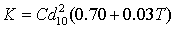 |
(3) |
where:
K is hydraulic conductivity (m/day)
C is Hazen Coefficient calculated based on porosity [Eq. (4)]
d10 is effective grain diameter (mm).
T is temperature in °C
|
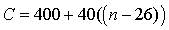 |
(4) |
where:
n is porosity as a percentage (not as a fraction).
For a typical groundwater sample with a temperature of 10 oC, Eq. (3) can be re-written as:
|
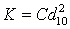 |
(5) |
Eq. (5) is also known as the Beyer equation when temperature is not taken into consideration. In the Beyer equation hydraulic conductivity is estimated in m/s units and C is calculated as:
|
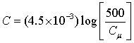 |
(6) |
The Kozeny-Carman equation (Eq. (7)) also considers porosity as well as the effective grain diameter:
|
|
(7) |

Alyamani and Sen (1993) introduced a new variable to their equation: intercept (Io) is the value at which no material passes from the set of sieves. This value is usually very small and theoretically, equal to or less than d10. Intercept has a direct relationship with hydraulic conductivity. They also suggested a relationship between hydraulic conductivity and the slope which defines the rate of grain diameter change within the sample. They derived a relationship as:
|
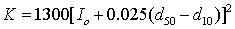 |
(8) |
The use of Intercept makes Alyamani-Sen equation applicable to a much wider range of soil types with various size distribution properties.
3.2. Modified Equation to Represent Heterogeneity
In a homogeneous porous medium such as those used in the soil column laboratory experiments of Liu et al. (2009), d10 is very similar to d50 and d60 as a result of near-perfect sorting in preparations. Hence, Cμ tends towards 1 and any of the given equations can be rewritten with d10, d50, and d60 replaced by a single value for the grain size (collector diameter).
Using d50 as the representative average grain-size, will under-estimate collector efficiency. To further demonstrate this concept ten characterised soil samples from Australia were used (Table 1). The SCE for each sample was calculated using d50 based on the common practice of taking the average value as a representative measurement, followed by calculations using d10 as the most frequently used "effective grain size" reported in the literature.
Note that using d50 virtually assumes a larger grain size as a representative diameter. On the other hand, it is in fact the finer grains that control the hydraulic conductivity (and hence the ease of water flow) of a porous medium. It's also observed that SCE shows a very clear inverse relationship with hydraulic conductivity (plotted on a secondary axis) when effective grain size (d10) is used (Fig. 1).
|
Sample |
Hydraulic Conductivity (m/d) |
d10** |
d50 |
d60 |
St.Dev. |
Cμ |
Porosity (n)*** |
|
1 |
950.4 |
0.91 |
1.04 |
1.07 |
0.11 |
1.18 |
0.46 |
|
2 |
864 |
0.65 |
0.75 |
0.79 |
0.11 |
1.22 |
0.46 |
|
3 |
777.6 |
0.54 |
1.75 |
1.97 |
0.63 |
3.65 |
0.38 |
|
4 |
172.8 |
0.33 |
0.46 |
0.48 |
0.08 |
1.45 |
0.45 |
|
5 |
86.4 |
0.32 |
0.36 |
0.37 |
0.04 |
1.16 |
0.46 |
|
6 |
69.1 |
0.24 |
0.29 |
0.3 |
0.03 |
1.25 |
0.46 |
|
7 |
25.9 |
0.18 |
0.45 |
0.51 |
0.56 |
2.83 |
0.41 |
|
8 |
17.3 |
0.18 |
0.37 |
0.45 |
0.4 |
2.5 |
0.42 |
|
9 |
17.3 |
0.19 |
0.57 |
0.94 |
0.69 |
4.95 |
0.36 |
|
10 |
17.3 |
0.16 |
0.21 |
0.22 |
0.03 |
1.38 |
0.45 |
* Data taken from Alyamani and Sen (1993) ** All diameters are in mm *** Porosity of each sample was calculated from the Vukovic and Soro (1992) equation; n = 0.255 (1+0.83Cµ)
Assuming a poorly sorted (well graded), homogeneous porous medium at 10 °C, each one of Equations 5 (for both Hazen and Beyer), 7, and 8 can be rearranged as Equations 9, 10 and 11 in terms of dc (equivalent to d10).
The Hazen equation (Eq. (5)) at 10 °C can be expressed as:
|
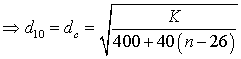 |
(9) |
The Beyer equation (Eq. (5)) can be rearranged as:
|
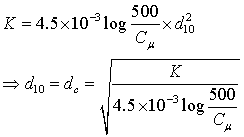 |
(10) |
The Kozeny-Carman equation becomes:
|
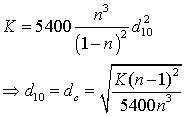 |
(11) |
The Alyamani and Sen equation (Eq. (8)) does not consider porosity: instead it is concerned with the difference between the mean and effective grain sizes. This difference defines a slope which, in turn, defines the intercept (I0) at the plot origin. In a well-sorted (homogeneous) porous medium, the trend line between d10 and d50 is essentially a vertical line parallel to Y axis. In such a case I0, d10, and d50 will have the same value as dc.
Hence dc can be expressed as
|
|
(12) |

Each one of these replacement equations offers a different level of representation for the natural heterogeneity of the porous media. In order to evaluate the deviation from the original theoretical equation (Eq. (2)), dc has been replaced by Eqs. (9)-(12) in Eq. (2) for a set of soil samples. Table 2 shows a list of various scenarios for which these calculations were carried out. In these scenarios, grain size changes between 0.001 and 1 millimetre. These scenarios cover a range of very fine to coarse grain size.
By developing these virtual scenarios the deviation of each method's result can be calculated from the theoretical value (calculated by Eq. (2)) selected method can be then evaluated using laboratory measurements of factual samples.
|
Collector Diameter (mm) |
Hazen K (m/day) |
Beyer K (m/day) |
Kozeny-Carman K (m/day) |
Alyamani-Sen K (m/day) |
|
0.001 |
0.0012 |
1.049359538 |
1.802518519 |
0.0013 |
|
0.01 |
0.12 |
10.49359538 |
18.02518519 |
0.130 |
|
0.1 |
12 |
104.9359538 |
180.2518519 |
13.00 |
|
1 |
1200 |
1049.359538 |
1802.518519 |
1300 |
For all scenarios particle diameter, particle length, temperature, and all other relevant parameters are the same and the uniformity coefficient is always 1 as the theoretical material is assumed to be homogeneous for validation purposes.
Table 3 contains the results of the SCE calculations for each method and the standard deviation from the original equation (Eq. (2)). Results presented in Table 3 strongly favour the Alyamani-Sen equation which has replicated the SCE calculated by Eq. (2) most closely. Based on this validation of the various options available, we adapted this equation for up-scaling Eq. (2).
|
Grain Size |
Eq. (2) |
Hazen |
Beyer |
Kozeny-Carman |
Alyamani-Sen |
|
0.001 |
7.68E-5 |
1.047E+1 |
2.41E-1 |
5.49E+0 |
3.50E-6 |
|
0.01 |
2.61E-6 |
1.04E-1 |
2.41E-2 |
5.36E-1 |
1.87E-6 |
|
0.1 |
1.53E-6 |
1.05E-3 |
2.41E-3 |
5.50E-2 |
1.52E-6 |
|
1 |
1.44E-6 |
1.19E-5 |
2.43E-4 |
5.50E-3 |
1.44E-6 |
The values of SCE for the previously mentioned Australian soil samples have been compared between Eq. (2) -with the limitation of assuming d50 or d10 as dc and hence neglecting the heterogeneity- and the proposed modified equation where the Alyamani-Sen equation (Eq. (12)) has replaced dc in Eq. (2). Figure 2 illustrates the results of this comparison.
The Alyamani-Sen equation offers an even more interesting observation. Despite following a general inverse relationship with hydraulic conductivity, it estimates SCEs below and above those calculated based on d10 only. This is believed to be due to other characteristics of the soil such as uniformity, porosity, effective porosity, pore connectivity, and size distribution.
Note that the Hazen, Beyer, and Kozeny-Carman equations calculated values of approximately 1, 2, and 3 orders of magnitude larger than those calculated by Alyamani andSen. The Hazen equation has been recommended for conditions under which 0.1<d10<3 mm and Cμ<5 (Vukovic and Soro, 1992). While these conditions are true for all ten soil samples tested in this paper, the Hazen method predicts much higher values for SCE.
Alyamani-Sen SCE values seem to increasingly deviate from theoretical values by decreasing grain size. However, this equation continually offers the closest predictions to the theoretical calculations based on Eq. (2).
4. Conclusion
The mobility of CNTs in the natural environment is significant in predictive modelling of their fate and transport when considering risk assessment aspects of the release of these engineered nanoparticles. This study highlights the importance of considering the natural heterogeneity of natural porous media when modelling the factors relating to the mobility of CNTs.
Although clean-bed filtration (traditional filtration) theory has proven useful in preliminary predictions of CNT travel distance in saturated porous media, it falls short in representing the heterogeneity of the natural subsurface.
Virtual and real scenarios tested in this study have illustrated a difference in values estimated with and without the heterogeneity represented in the predictions. These observations plant the seeds for a plausible argument that the mobility of CNTs can be significantly different from those estimated under the assumption of uniformity and homogeneity.
Virtual and real scenarios tested in this study have illustrated a difference in values estimated with and without the heterogeneity represented in the predictions. These observations plant the seeds for a plausible argument that the mobility of CNTs can be significantly different from those estimated under the assumption of uniformity and homogeneity.
References
Alyamani, M. S., Sen, Z. (1993). Determination of hydraulic conductivity from grain-size distribution curves. Ground Water, 31,pp. 551-555. View Article
Balasubramanian, K., Burghard, M. (2005). Chemically functionalized carbon nanotubes. Small, 1, pp. 180–192. View Article
Bhattacharjee, S., Ryan, J., Elimelech, M. (2002). Virus transport in physically and geochemically heterogeneous subsurface porous media. Journal of Contaminant Hydrology , 57, pp.161– 187. View Article
Boxall, A. B. A. (2012). New and emerging water pollutants rising from agricultyre. Organization for Economic Co-Operation and Development 2012. View Article
Carman, P. C. (1937). Fluid flow through granular beds. Transactions of the Institution of Chemical Engineering, 15, 150. View Article
Cui, D. X., Tian, F. R., Ozkan, C. S., Wang, M., Gao, H. J. (2005). Effect of single wall carbon nanotubes on human HEK293 cells. Toxicology Letters, 155, pp. 73-85. View Article
Davoren, M., Herzog, E., Casey, A., Cottineau, B., Chambers, G., Byrne, H. J., Lyng, F. M. (2007). In vitro toxicity evaluation of single walled carbon nanotubes on human A549 lung cells. Toxicology in Vitro 21, 21, pp. 438-48. View Article
Dhawan, A., Taurozzi, J. S., Pandey, A. K., Shan, W., Miller, S. M., Hashsham, S. A., Tarabara, V. V. (2006). Stable colloidal dispersion of C60 fullerenes in water: evidence for genotoxicity. Environmental Science and Technology, 40, pp. 7394-7401. View Article
Ding, L. H., Stilwell, J., Zhang, T. T., Elboudwarej, O., Jiang, H. J., Selegue, J. P., Cooke, P. A., Gray, J. W., Chen, F. Q. F. (2005). Molecular characterization of the cytotoxic mechanism of multiwall carbon nanotubes and nano-onions on human skin fibroblast. Nano Letters, 5, pp. 2448-64. View Article
Hazen, A. (1892). Some physical properties of sands and gravels, with special reference to their use in filtration. 24th Annual report, Massachusets State Board of Health, Pub. Doc. No. 34,pp. 539-556.
Hussain, M. A., Kabir, M. A., Sood, A. K. (2009). On the cytotoxicity of carbon nanotubes. Current Science, 96, pp. 664-73. View Article
Hyung, H., Fortner, J. D., Hughes, J. B., Kim, J. H. (2007). Natural organic matter stabilizes carbon nanotubes in the aqueous phase. Environmental Science and Technology, 41, pp. 179-184. View Article
Jaisi, D., Saleh, N., Blake, R., Elimelech, M. (2008). Transport of Single-Walled Carbon Nanotubes in Porous Media:Filtration Mechanisms and Reversibility. Environmental Science and Technology, 42, pp. 8317–8323. View Article
Kang, S., Pinault, M., Pfefferle, L. D., Elimelech, M. (2007). Single-walled carbon nanotubes exhibit strong antimicrobial activity. Langmuir, 23, pp.8670–8673. View Article
Kashiwada, S., (2006), Distribution of nanoparticles in see-through medaka (Oryzias latipes). Environ.Health Persp., 114, pp. 1697-1702. View Article
Kozeny, J. (1927). Uber kapillare leitung des wassers in boden. Sitzungsber Akad. Wiss.Wien Math.Naturwiss.Kl., Abt.2a, 136,pp. 271-306 (In German).
Lam, C.-W., James, J. T., McCluskey, R., Hunter, R. L. (2004). Pulmonary toxicity of single-wall carbon nanotubes in mice 7 and 90 days after intratracheal instillation. Toxicological Science, 77, pp. 126–134. View Article
Liu, X., O'Carroll, D., Petersen, E., Huang, Q., Anderson, L. (2009). Mobility of multiwalled carbon nanotubes in porous media. Journal of Contaminant Hydrology, 43(21), pp. 8153-58. View Article
Lovern, S. B., Klaper, R. (2006). Daphnia magna mortality when exposed to titanium dioxide and fullerene (C60) nanoparticles. Environmental Toxicological Chemistry, 25(4), pp. 1132-1137. View Article
Masch, F. D., Denny, K. J. (1966). Grain-size distribution and its effects on the permeability of unconsolidated sands. Water Resources Research, 2, pp. 665-667. View Article
Maxwell, M., Welty, C., Tompson, F. B. (2003). Streamline-based simulation of virus transport resulting from long term artificial recharge in a heterogeneous aquifer. Advances in Water Resources, 26, pp. 1075–1096. View Article
Maxwell, R., Welty, C., Harvey, R. (2007). Revisiting the cape cod bacteria injection experiment using a stochastic modeling approach. Environmental Science and Technology, 41, pp. 5548-58. View Article
Maynard, A. D., Aitken, R. J., Butz, T., Colvin, V., Donaldson, K., Oberdorster, G., Philbert, M. A., Ryan, J., Seaton, A., Stone, V., Tinkle, S. S., Tran, L., Walker, N. J., Warheit, D. B. (2006). Safe handling of nanotechnology. Nature, 444, pp. 267-69. View Article
Nowack, B., Bucheli, T., Occurrence, D. (2007). Behaviour and effects of nanoparticles in the environment. Environmental Pollution, 150, pp. 5–22. View Article
Oberdorster, E. (2004). Manufactured nanomaterials (fullerenes, C60) induce oxidative stress in the brain of juvenile largemouth bass. Environmental Health Perspective, 112(10), pp. 1058-1062. View Article
Oberdorster, E., Zhu, S., Blickley, T. M., McClellan, Green P., Haasch, M. L. (2006). Ecotoxicology of carbon-based engineered nanoparticles: effect of fullerene (C60) on aquatic organisms, Carbon, 44, pp. 1112-1120. View Article
Poland, C. A. (2008). Carbon nanotubes introduced into the abdominal cavity of mice show asbestos-like pathogenicity in a pilot study, Nature Nanotechnology, 3 (7), 423. View Article
Pulskamp, K., Diabate, S., Krug, H. F. (2007). Carbon nanotubes show no sign of acute toxicity but induce intracellular reactive oxygen species in dependence on contaminants. Toxicology Letters, 168, pp. 58–74. View Article
Raja, P. M. V., Connolley, J., Ganesan, G. P, Ci, L. J., Ajayan, P. M., Nalamasu, O., Thompson, D. M. (2007). Impact of carbon nanotube exposure, dosage and aggregation on smooth muscle cells. Toxicology Letters, 169, pp.51-63. View Article
Rogers, N. J., Franklin, N. M., Apte, S. C., Batley, G. E. (2007). The importance of physical and chemical characterization in nanoparticle toxicity studies. Integrated Environmental Assessment and Management, 3(2), pp. 303-304. View Article
Sun, N., Elimelech, M., Sun, N. Z., Ryan, J. N. (2001). A novel two-dimensional model for colloid transport in physically and geochemically heterogeneous porous media. Journal of Contaminant Hydrology, 49, pp. 173–199. View Article
Tiede, K., Boxall, A. B. A., Tear, S. P., Lewis, J., David, H., Hassellov, M. (2008). Detection and characterisation of engineered nanoparticles in food and the environment. Food Additives and Contaminants: Part A, 25 (7), pp. 795-821. View Article
Tufenkji, N., Redman, J., Elimelech, M. (2003). Interpreting Deposition Patterns of Microbial Particles in Laboratory-Scale Column Experiments. Environmental Science and Technology, 37, pp. 616-23. View Article
Uma, K. O., Egboka, B. C. E., Onuoha, K. M. (1989). New Statistical Grain-Size Method for Evaluating the Hydraulic Conductivity of Sandy Aquifers. Journal of Hydrology, Amsterdam,108, pp. 367-386 View Article
Vukovic, M., Soro, A. (1992). Determination of hydraulic conductivity of porous media from grain-size composition. Water Resources Publications, Littleton, Colorado
Yao, K. M., Habibian, M. M., Omelia, C. R. (1971). Water and waste water filtration - concepts and applications. Environmental Science and Technology, 5, pp. 1105-1112. View Article